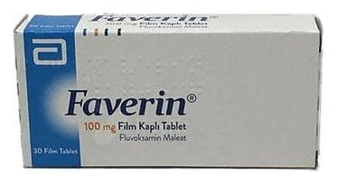

Faverin 100 mg Film Kaplı Tablet, 30 Adet

Ne için kullanılır
KT · Bölüm 1FAVERİN®, oval, bikonveks, beyaz renkte, bir y üzü düz, diğer yüzünde "FAVERİN" yazılı çentikli 30 film kaplı tablettir.
FAVERİN®, selektif serotonin geri alım inhibitörü (SSRI) denilen ilaç grubuna dahildir. SSRI’lar, eksikliği depresyon ve obsesif kompulsif bozukluk (OKB) (aşırı titizlik, kontrol arzusu gibi düşünce ve bu düşünceleri zihinden atmak için yapılan çoğu kez anlamsız ve tekrarlayıcı davranışlar) gibi rahatsızlıklara neden olan serotonin isimli maddenin, sinir hücreleri üzerindeki etkisini arttırırlar. FAVERİN®, fluvoksamin denilen bir madde içerir. Bu bir antidepresandır. Depresyonu (majör depresif bozukluğu - sosyal yetenekleri bozacak derecede kederli olma hali) tedavi etmede kullanılır. FAVERİN®ayrıca obsesif kompulsif bozukluk (OKB) tedavisinde de kullanılır.